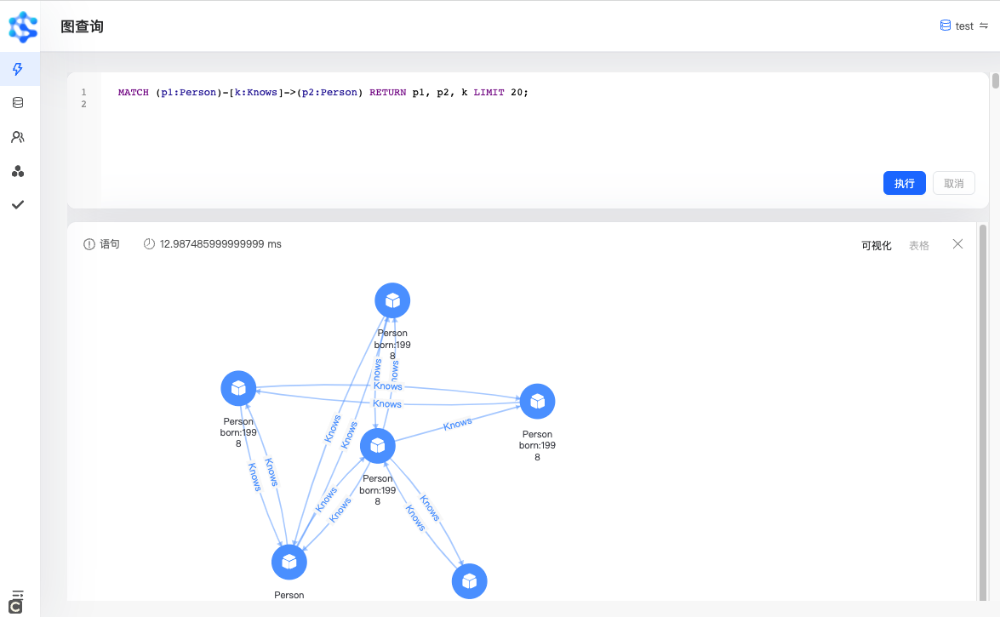

图模融合基础设施
Atlas
让企业 AI 建立在可计算、可推理、可控制的图上
以云原生图数据库为底座，构建 GraphRAG 与 Agent 控制设施，让知识、上下文、任务和执行过程可查询、可治理、可追溯。
图模融合产品体系
以图数据为核心，贯通检索、推理与执行
共享图语义与治理边界：从数据结构开始，为模型提供可靠上下文，并将 Agent 行为纳入企业控制。
AtlasGraph
云原生图数据库图数据核心
统一存储实体、关系、事件与状态，为复杂关联查询和上层 AI 提供实时图计算。
→ 02AtlasRAG
图增强检索与推理语义推理层
用拓扑关系定位知识，动态构造子图上下文，并保留可解释的推理路径。
→ 03AtlasHarness
Ontology 驱动的 Agent Harness可控执行层
以图数据库为基础设施，用 Ontology 组织任务、技能、规则与状态，让 Agent 执行可治理。
→让复杂关系在生产环境中实时计算
AtlasGraph 面向企业级关联数据场景，以 Rust 构建高性能内核，支持分布式存储、实时并行图计算和 OpenCypher 查询。

存储与计算协同优化，服务低延迟关联查询。
水平扩展、负载均衡、故障检测与自动恢复。
可视化建模、图查询、探索分析与运维管理。
图算法、APOC、数据工具与多语言 SDK。
AtlasRAG
超越向量搜索用图关系为 LLM 提供可推理的上下文
不再只返回相似片段。AtlasRAG 将实体、关系和路径组织成动态子图，让模型看到问题背后的完整语义结构。
- 01Agent 分析查询，规划多跳检索路径
- 02沿图拓扑定位跨文档知识
- 03为 LLM 生成结构化、可解释的子图上下文
AtlasHarness
Ontology 驱动的 Agent Harness把 Agent 的行动放进企业可治理的图中
AtlasHarness 以 AtlasGraph 为基础设施，用 Ontology 定义业务对象、任务、技能、规则、状态与审计关系，让 Agent 理解环境、规划任务并在边界内执行。
将业务对象、权限和环境状态映射为机器可读取的语义图。
把目标拆解为任务与技能调用，并管理检查点、恢复和副作用。
接入权限、审批、策略与审计，记录每一次决策和执行路径。
三层协同
从一个采购 Agent，看图模融合如何落地
同一张图贯通企业事实、模型上下文和执行状态，减少信息断裂与不可解释决策。
连接供应商、合同、物料、交易与风险事件，实时查询多跳影响。
沿关系检索政策、历史合作和替代方案，生成可解释的子图上下文。
规划询价、比价和审批任务，调用企业系统并记录完整执行链路。
企业级落地
从图数据库走向 AI 运行底座
对接业务系统、权限系统、审批流程和模型服务，建立可持续演进的企业 AI 基础设施。
结构化数据、文档、事件流与外部知识。
统一实体、关系、Ontology 与业务规则。
服务 GraphRAG、Agent 与行业智能应用。
部署、迁移、治理与生产保障服务。
从一张关键业务图开始，建立企业的图模融合能力
与 Atlas 团队讨论图数据库、GraphRAG 或 Agent Harness 的落地路径。